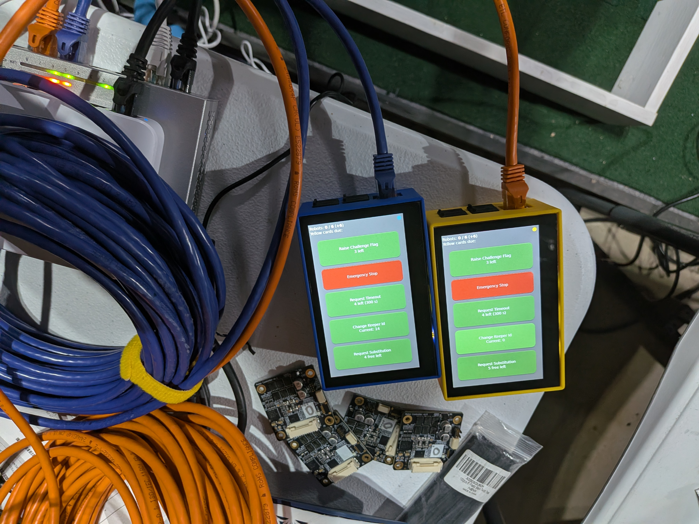
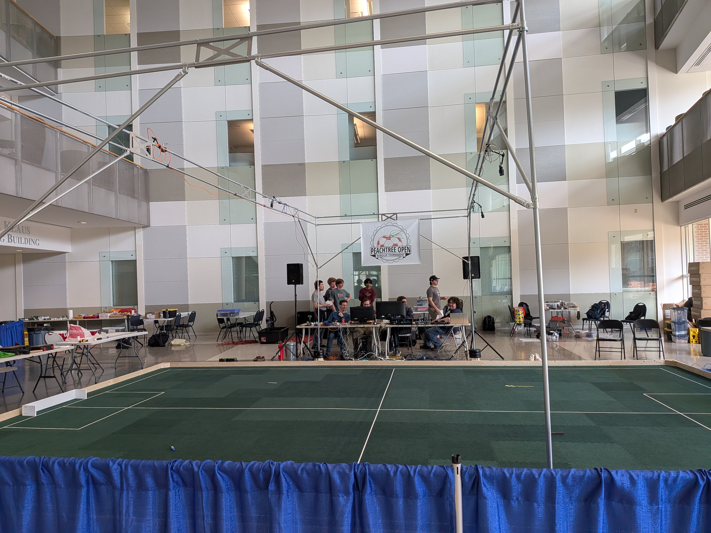

Competition Field¶
This page describes a full feature competition field setup and layout. Field dimensions are described in the SSL Rules.
Aspects of the described field are optional, particularly audience facing items. When something is optional, it is so noted.
Top Level Diagram¶
A full diagram is provided below. Scale is approximately relative to the field, but omitted to allow for local variance.

There’s a lot to dissect here, but lets define some abbreviations:
GC - Game Controller
VIS - Vision Computer
NE - Networking Equipment
SC - Streaming Computer
The colors hold meaning as well:
Yellow - Yellow Team resource
Blue - Blue Team resource
Cyan - Event/league resource
Orange - Role provided by neutral party
Pink - Role provided by neurtal party
Placement and Layout Guidance¶
The above layout is intentionally crafted to provide a smooth experience for officials, teams, and spectators.
Field Placement¶
The field should placed in the venue such that a clear separation between spectators and teams is achieved. There’s should be a team area away from the field, often called “the pits”, where mechanical and electrical work is done. Teams spend most of their time in the pits when not competing in a match or testing during an official testing time slot. Spectators should be granted a clear view of the competition field, but distanced from the pits. Occasionally robots malfunction so this separation is key. A physical barrier is recommended between spectators and the field and pits.
Tables¶
Enough tables should be provided such that the vision and game controller each have at least half a table. Each team should have at least 1 full table at the field during their match or registered practice slot. A permanent dedicated field table for the full duration of the event is not guaranteed; teams may need to share between matches. Tables should be no smaller than ~1m x 2m (3 x 6ft).
A gap should be present at the midfield line so game officials and robot handles have easy access to enter and leave the field. Care should be taken to secure netwokring cables on the ground at this entry point in particular. This is also the area most likely to be used to put in and remove robots (compared to the far side).
Organizers should avoid placing tables between the field and spectators. Typically with specified field size and number of teams in attendance it is not necessary to place tables all the way around the field. This means it is possible to keep clear line of sight between spectators and the field. This also has the advantage of placing the robot handlers and remote controls in closer proximity to the referee and game controller. If issues arise via challenge flags, or field network faults all of the relevant parties are in closer proximity to each other to resolve any issues.
Each table should be provided with one power outlet and one networking cable. It is the team’s responsibility to bring a power strip or network switch if they need more than one connection when arriving at their table for the match.
Event Equipment¶
The vision and game controller computers should be placed close to each other, the midfield line, and the referee. This has several advantages:
The Referee and GCO can communicate easily
The VE and GCO can communicate as necessary
Networking is centrally located and can be patched more easily
A physical space buffer is provided between the teams and the midfield, lowering congestion
It’s shown in the diagram as being split across the midfield line, but combining them into one table on a single side is also common. If this is done, it’s preferable to have one empty table on the opposing side, or to omit it to provide the referee a buffer.
Ideally, at least one status board is positioned such that the audience, referees, and teams have good visibility into the game state. While most events provide at least one status board, a first time event or casual meetup for scrimamge may not set up any status boards.
If possible, the Audio Referee (at least the speaker) should be placed on the far side of the field so it speaks only to the audience, not the field and audience. It can speak fairly often and this can be overwhelming to the referee and assistant referee who may be attempting to communicate both across the field and a language barrier.
Function of Components¶
Only the function of components, not people are described here. For the purpose of specific human roles, consult the rules.
Networking Equipment¶
The networking equipment is the small cyan box labeled “NE” on the diagram. It is typically centrally located near the ground. The networking equipment is responsible for connecting all of the computers at the field and providing essential network services. See the Network and Compute for physical network details.
Cameras¶
One or more overhead cameras are needed to observe the field and pass video frames to league processing software. These cameras are typically mounted between 2.5m and 6.5m above the field. At official tournaments, they are typically mounted around 6.0-6.25m. When cameras are mounted near the top of the range, a small computer is mounted with the camera on the truss or building features. This is usually to overcome difficulties in transmitting raw camera data long distances. More information is present in the Cameras and Lenses page.
Vision Computer¶
The vision computer is the device labeled “VIS” in the diagram. The vision computer is responsible for providing robot and ball position data on the network. League software processes camera data and field geometry to produce accurate positions. This computer needs a connection to one or more cameras directly, or their associated mounted computer. The specifics of this connection can be very field dependent and are described in more detail under the possible configurations section below. See the Vision Protocol page for the league software that fills this role.
Game Controller Computer¶
The game controller computer is the device labeled “GC” in the diagram. The game controller computer manages the game state and publishes this information to the network. It also accepts requests from the teams via the remote control or optionally the team AI software. See the Referee Protocol page for the league software that fills this role.
Remote Control¶
Each team is provided a remote control at the field to interact with the controller/referee software. These are labeled “RC” in the diagram. Teams use these to request timeouts and robot exchanges. If possible, the 3D printed cases should be color matched to the team so it’s clear which remote is which. Additionally, cables should be color matched as well. Often times networking contractors at large events are unable to accommodate the remote color matching.

Team Computer¶
Teams are responsible for bringing their own computer to run their software and AI. Teams should expect only one network and one power connection at their table.
Status Board (Recommended, Optional)¶
The status board displays the score, game time, and events such as infractions and goals. At least one display should be available to the referees and teams. Additional displays for the audience are optional.
Streaming Computer (Optional)¶
The streaming computer is labeled “SC” on the diagram. It is an optional system to record and stream video in realtime to one or more livestreams. It is capable of switching between camera feeds and can receive the game state on the field network to produce a scoring overlay for viewiers. This is the only computer to which an internet connection is guaranteed to be provided. Because it is optional, some competitions completely omit this system.
Audio Referee (Optional)¶
The audio referee receives the game state and announces key events to the audience automatically. Because it is optional, some competitions completely omit this system.
Possible Configurations¶
A key challenge with setting up a RoboCup SSL events or lab space is the camera arrangement. Mounting cameras high up carries strong advantages in producing a low-distoration image with a fewer number of cameras. This is a massive benefit when setting up many fields at the international event. However, for many lab spaces and lower-cost events mounting cameras at 6m simply isn’t possible (ceiling is too low) or carries significant expense (renting overhead mounts and certified personnel). As such, camera configuration may vary from event to event, though the main international event is fiarly consistent. Some common configurations are listed below.
International Event - Division B¶
The simplest configuration is the international event Division B field. In this configuration, a single camera is mounted at ~6.25m in position “A” in the layout diagram. A computer is mounted with it on the overhead truss. The vision computer remotely accesses the camera computer mounted overhead. In this configuration, the vision computer is only used for remote access.
International Event - Division A¶
The second simplest configuration is the international event Division A field. In this configuration, a two cameras are mounted at ~6.25m in positions “B” in the layout diagram. Each camera covers half a field. A single camera is not used because it would need to be nearly quadruple the resolution and mounted even higher, which often practically impossible. A computer is mounted with each camera on the overhead truss in positions “B”. The vision computer remotely accesses the camera computers mounted overhead, one at a time. In this configuration, the vision computer is only used for remote access.
Regional Event¶
Regional events may cut costs by mounting a higher number of cameras lower to the ground. These cameras can also be lower resolution because they are covering a smaller area of the field. This configuration is used at the North American Peachtree Open Event. In this configuration, 4 cameras are mounted at positions “C”. Because the data is lower and mounting is lower, computers are not mounted overhead with the cameras, but instead the raw camera data is sent directly to the vision computer. In this case, the vision computer is not used for remote access, but directly hosts the software that processes the vision data.

This picture is taken from the 1st Annual Peachtree Open. Notice there are four overhead cameras, none with associated computers overhead. The vision and game controller computers are on the back field side, though they are obstructing the midfield line which is not ideal. Note team tables to the left (and right, not pictured) do not block the spectator view. Blue pipe and drape separates the spectators from the field. Team pits are located along the back wall.
Not all regional events use this modified configuration. For example the Japan Open and German Open do not, as they have established infrastructure and event space to do the higher mounting.
University Lab Space¶
University lab space also has ceiling height and cost constraints most of the time. A typical lab configuration looks similar to the regional event configuration, but with only a partial field and even fewer cameras. Often labs have a half or quarter Division B field, with one or two cameras. Sometimes the cameras are mounted to the side and not overhead. More details on this configuration can be seen in the lab layout page.